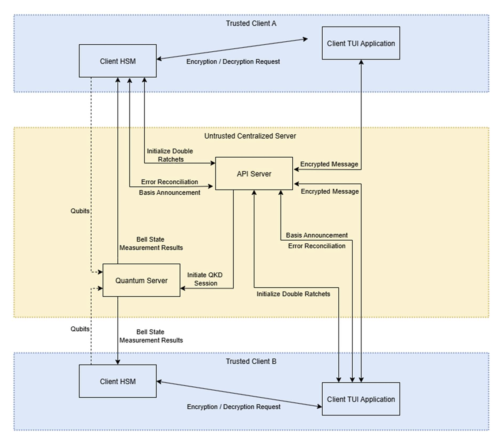
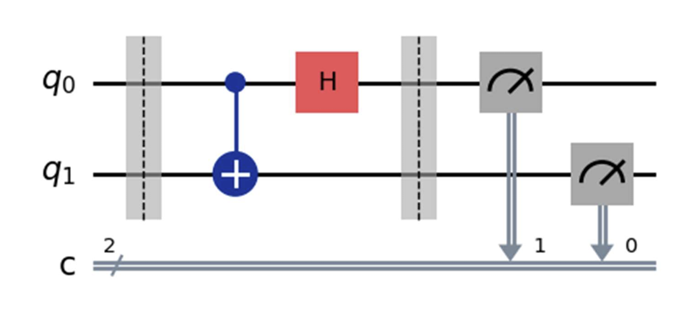
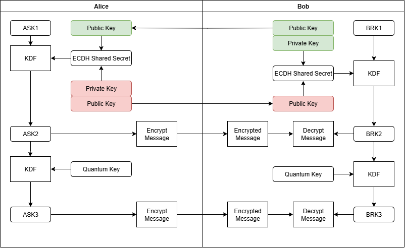
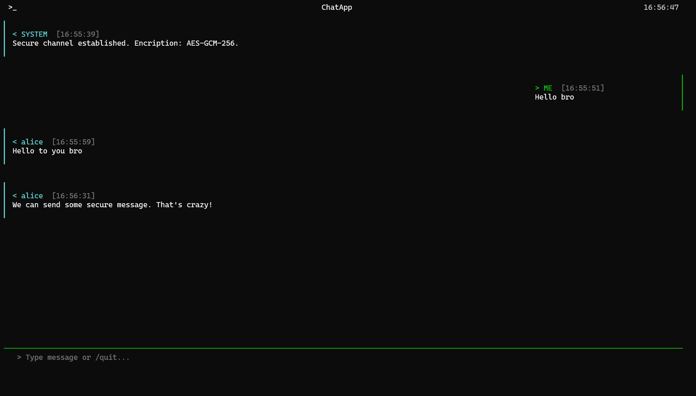
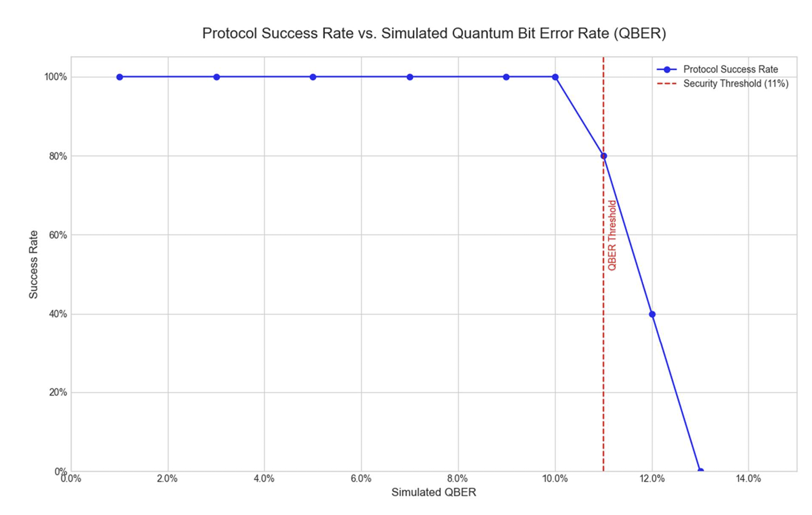
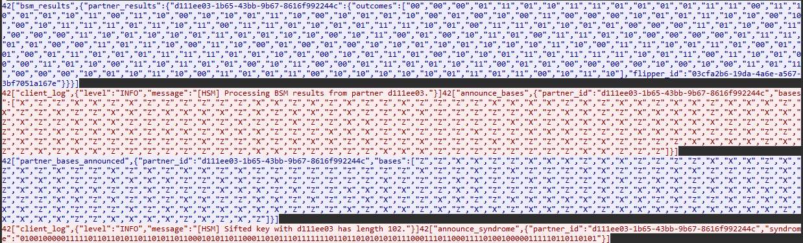

If there is one thing that keeps cryptographers awake at night, it's the looming threat of quantum computers breaking traditional algorithms like RSA and ECC. For my final year project, I knew I wanted to tackle this head-on. I ended up designing and simulating a multiparty secure messaging system that blends Measurement-Device-Independent Quantum Key Distribution (MDI-QKD) with the classical Double Ratchet Algorithm.
The idea was simple but ambitious which is using the laws of quantum mechanics to establish an unconditionally secure initial key, and then use modern cryptographic ratcheting to guarantee perfect forward secrecy for the actual chat. Here is a deep dive into how I built it.
The full project can be found on my Github Repository
01 // SYSTEM ARCHITECTURE
When designing a secure chat system, the golden rule is to trust no one. I built the architecture entirely around the assumption that the central infrastructure is either malicious or completely compromised. By using MDI-QKD, we literally don't even need to trust the quantum measurement device (the server). Even if the server is actively trying to intercept the keys, it physically cannot learn the key bits without the users' secret basis information.

To make this work, I split the system into four main, heavily isolated components:
- Client TUI Application: The frontend where users actually type their messages, built entirely for the terminal using Textual.
- Client HSM (Simulated): A software-defined Hardware Security Module. I wanted to logically separate the UI from the cryptography, so this module handles all Qubit preparation, Key Sifting, and Ratchet math. The UI never touches raw keys.
- API Server: An untrusted classical server (Flask/Socket.IO) that just acts as a dumb router for orchestration and message relaying.
- Quantum Server: The untrusted node that simulates Bell State Measurements (BSM) using IBM's Qiskit.
02 // THE MDI-QKD PROTOCOL
I'll admit, diving deep into quantum mechanics for a computer science project was a massive leap out of my comfort zone, but the math behind it is fascinating. Unlike standard BB84 QKD, MDI-QKD eliminates detector side-channel attacks entirely by delegating the measurement phase.
A. Qubit Preparation
First, the client HSMs prepare their qubits in one of two bases: Z (Computational) or X (Hadamard). In my simulation, this is done by generating QASM strings that are sent off to the Quantum Server (Assuming of the quantum channel).
- Z-Basis: $|0\rangle$ and $|1\rangle$
- X-Basis: $|+\rangle = \frac{|0\rangle + |1\rangle}{\sqrt{2}}$ and $|-\rangle = \frac{|0\rangle - |1\rangle}{\sqrt{2}}$
B. Bell State Measurement (BSM)
This was one of the coolest parts to simulate. The Quantum Server receives qubits from Alice and Bob, applies a CNOT gate followed by a Hadamard gate to entangle them, and then measures the state. This collapses the qubits into one of four Bell States:
$$ |\Phi^\pm\rangle = \frac{|00\rangle \pm |11\rangle}{\sqrt{2}}, \quad |\Psi^\pm\rangle = \frac{|01\rangle \pm |10\rangle}{\sqrt{2}} $$

The beauty of this is that the server announces the measurement outcome publicly, allowing clients to correlate their bits without ever revealing the bits themselves:
If result is $\Phi^+$ or $\Phi^-$ in Z-basis -> Same Bits
If result is $\Psi^+$ or $\Psi^-$ in Z-basis -> Opposite Bits (One client just flips their bit locally)
(The logic cleverly inverts for the X-basis due to phase flip properties)
C. Post-Processing & Error Correction
Of course, in the real world, quantum channels are noisy. Photons get lost, and states degrade. I couldn't just assume perfect transmission, so I implemented LDPC (Low-Density Parity-Check) codes to handle error correction.
One client (designated as the "flipper") calculates a syndrome ($H \cdot key$) and sends it over the classical channel. The receiving partner then uses a Belief Propagation + Localised Statistics Decoding (BP+LSD) algorithm to sift through the simulated channel noise and correct their bit string.
Here is the ultimate security catch: if the calculated Quantum Bit Error Rate (QBER) exceeds 11%, the system assumes Eve is listening, aborts the protocol, and dissolves the group immediately.
03 // DOUBLE RATCHET INTEGRATION
So, QKD gets us a mathematically unbreakable initial key. Awesome. But we can't just use that one key to encrypt an endless chat stream. If an attacker somehow compromises a device years later, we are cooked. That’s why I wired the quantum key directly into a Double Ratchet algorithm—the exact same protocol that powers Signal and WhatsApp.
I utilized X25519 for the asynchronous Diffie-Hellman handshakes and HKDF (SHA-512) to derive the continuous chain keys.

The flow looks like this:
- Root Key: Derived directly from our hard-earned MDI-QKD shared secret.
- Symmetric Ratchet: Advances with every single message sent or received, ensuring that old keys are destroyed (Forward Secrecy).
- DH Ratchet: Periodically updates the Root Key via a public-key exchange. Even if a session key leaks, the attacker gets locked out as soon as a new DH exchange happens (Post-Compromise Security).
04 // IMPLEMENTATION HIGHLIGHTS
I wanted the actual application to feel gritty and practical—like a tool you'd fire up in a high-stakes environment. I containerized the entire backend with Docker and focused heavily on the frontend experience.
- Frontend: I used the
Textualframework to build a hacker-style Terminal UI. It handles asynchronous events beautifully without blocking the input loop. - Quantum Simulation: To make the group chats feasible, I ran
Qiskit Aerinside a Python multiprocessing pool on the Quantum Server. This parallelized the BSMs and drastically cut down the key-generation wait times for multi-user groups. - Crypto: Used
PyCryptodomefor AES-256-GCM authenticated encryption on the actual chat payloads.

05 // SECURITY RESULTS & DISCUSSION
Theory is great, but does it actually withstand an attack? I spent weeks trying to break my own system to prove the implementation was solid.
Error Tolerance (QBER Analysis)
I injected random artificial noise into the simulated quantum channels. As expected, the LDPC error correction held up brilliantly up to about ~9% QBER. However, right as we hit that critical 11% threshold, the system correctly identified the channel as insecure, aborted the handshakes, and tore down the connection. The graph below maps out exactly how the protocol gracefully fails when the channel becomes too risky.

Security Validation
Finally, I fired up Wireshark and tcpdump to act as an active Man-in-the-Middle (MITM) adversary. Here is what happened:
- Confidentiality: Capturing packets during the chat phase yielded absolutely nothing but JSON headers and hex-encoded ciphertext. The plaintext was mathematically locked away.
- Tamper Resistance: I wrote a script to actively intercept and flip random bits in the ciphertext as it crossed the network. The result? The receiving client's HSM immediately threw an
InvalidTagexception because the AES-GCM tag verification failed, and the packet was silently dropped. - Replay Protection: I tried re-injecting old, valid message packets back into the stream. Because the Double Ratchet state had already advanced and destroyed the old receiving keys, the replays were entirely useless and blocked by the HSM.
